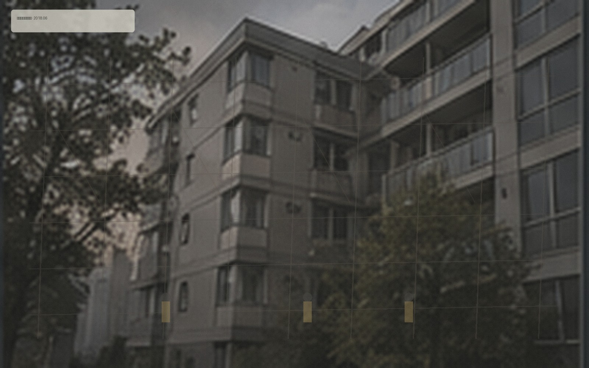

历时一年多的旧宿舍更新工程完成交付。两栋楼保留原有主体结构，更新了公共管线、消防疏散、门禁、公共照明与标准化室内配置。

改造范围
| 项目 | 内容 |
|---|---|
| 公共系统 | 给排水、电气、公共排风、消防指示与门禁 |
| 住宅内部 | 局部非承重墙、厨卫、门窗与基础收纳 |
| 施工协作 | 衡达工程 · 现场工程协调冯启元（公开文件署名“冯工”） |
为方便后续住户查阅，网站保留一份公开工程摘要。该摘要不替代正式规划与消防档案。
本页面内容最后更新于 2023-12-19
栖山公寓从职工宿舍更新为长期租赁社区。
历时一年多的旧宿舍更新工程完成交付。两栋楼保留原有主体结构，更新了公共管线、消防疏散、门禁、公共照明与标准化室内配置。

| 项目 | 内容 |
|---|---|
| 公共系统 | 给排水、电气、公共排风、消防指示与门禁 |
| 住宅内部 | 局部非承重墙、厨卫、门窗与基础收纳 |
| 施工协作 | 衡达工程 · 现场工程协调冯启元（公开文件署名“冯工”） |
为方便后续住户查阅，网站保留一份公开工程摘要。该摘要不替代正式规划与消防档案。